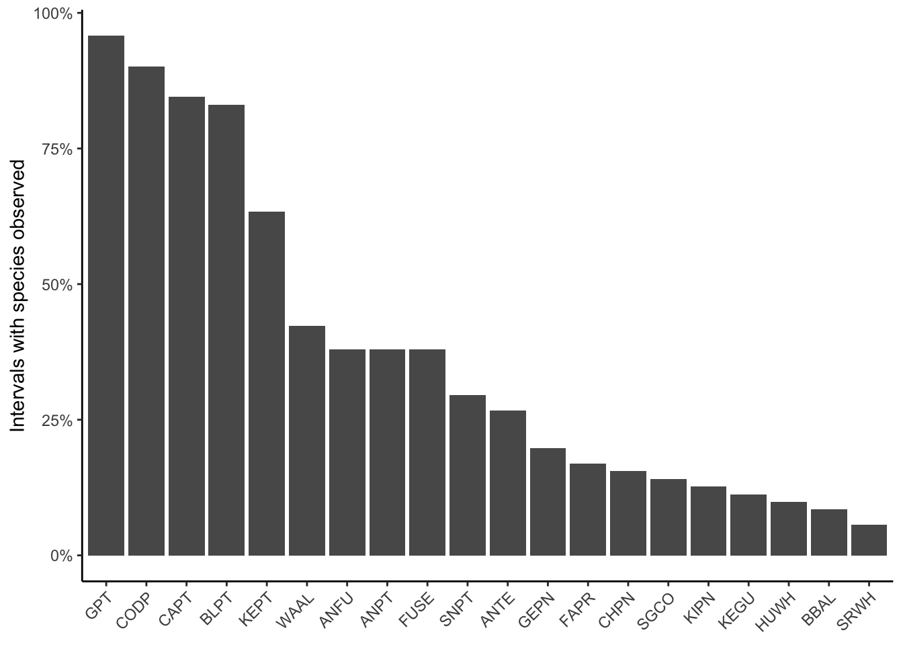
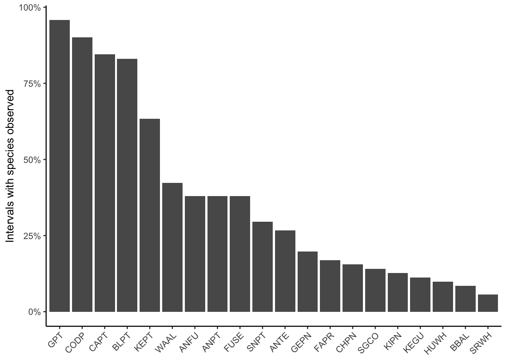
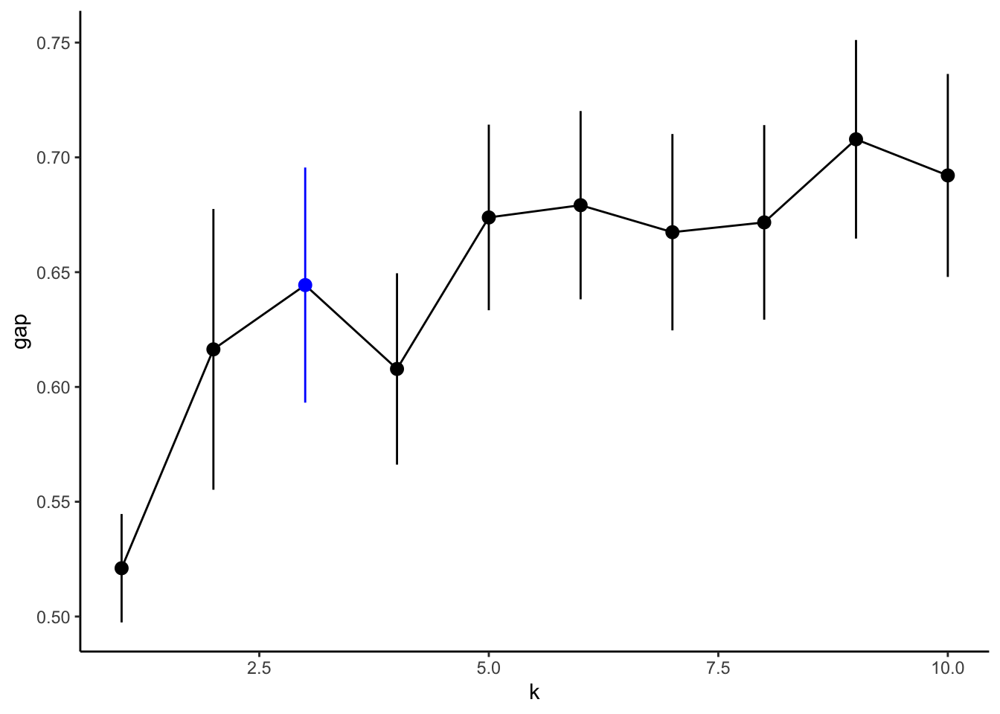
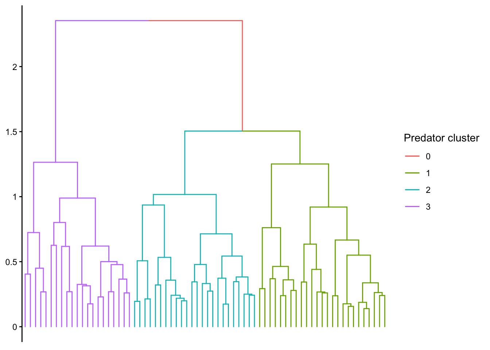
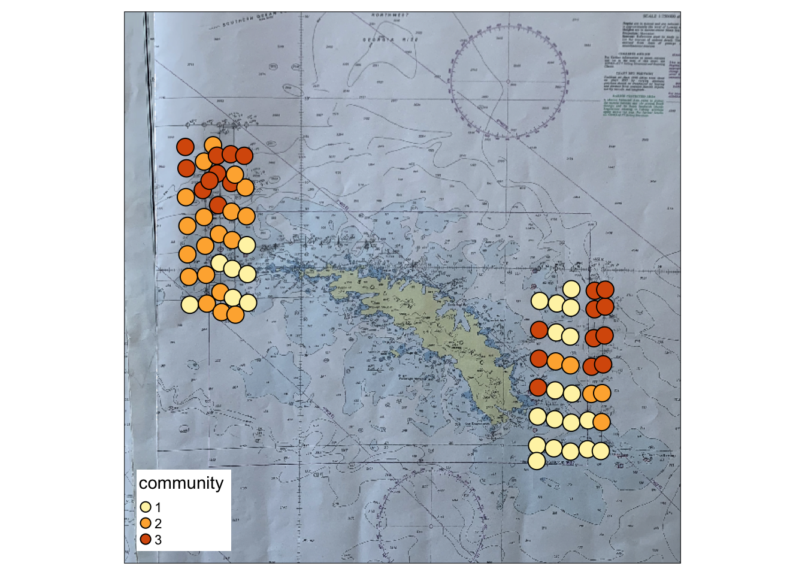

Warning in st_centroid.sf(.): st_centroid assumes attributes are constant over
geometries of x
Do seabirds and marine mammals form spatially distinct communities?
Begin by aggregating species into 10 nmi intervals and retaining species observed in at least 5% of those intervals.
Warning in st_centroid.sf(.): st_centroid assumes attributes are constant over
geometries of x
Using only these species, normalize counts to ind nmi^-1 (divide by interval length, they’re not exactly 10 nmi) and apply the pseudo-log transformation (\(log(x+1)\)) to reduce leverage of highly abundant species. Create a distance matrix using Bray-Curtis dissimilarity and apply hierarchical clustering using Ward’s clustering criterion. The first figure suggests 3 clusters is reasonable based on the shoulder in the gap statistic. The second figure is a dendrogram of the predator communities. Each tip in the tree represents one of the 10 nmi intervals.


We use Dufrene-Legendre indicator species analysis to describe each of the three clusters. The indicator value is the product of relative frequency and relative abundance, falling between 0 and 1. Indicator values close to 1 mean a species is extremely widespread and abundant within a cluster; a value close to 0 means a species is rare in that cluster. Species with indicator values >=0.20 shown below.
| 1 | 2 | 3 |
|---|---|---|
| CODP (85%) CAPT (64%) FUSE (63%) GPT (59%) GEPN (38%) SGCO (36%) |
ANFU (50%) WAAL (49%) BLPT (38%) GPT (28%) |
KEPT (29%) |
Distribution of the three seabird/marine mammal communities around South Georgia.
stars object downsampled to 896 by 1116 cells. See tm_shape manual (argument raster.downsample)